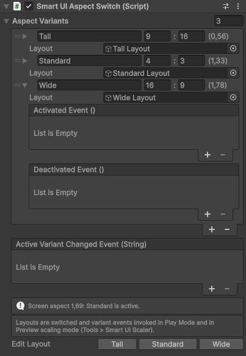
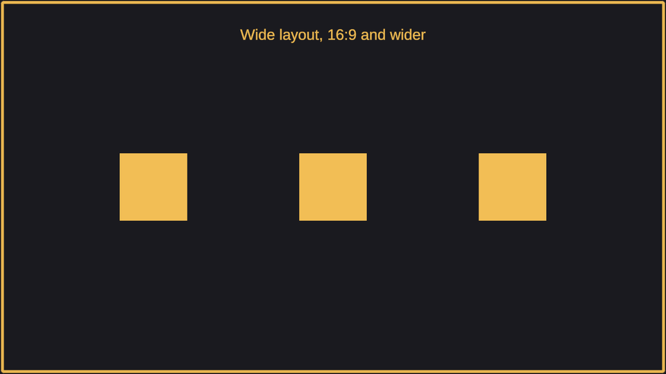
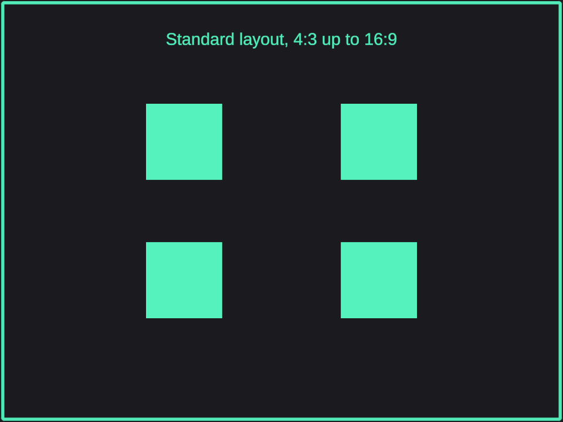
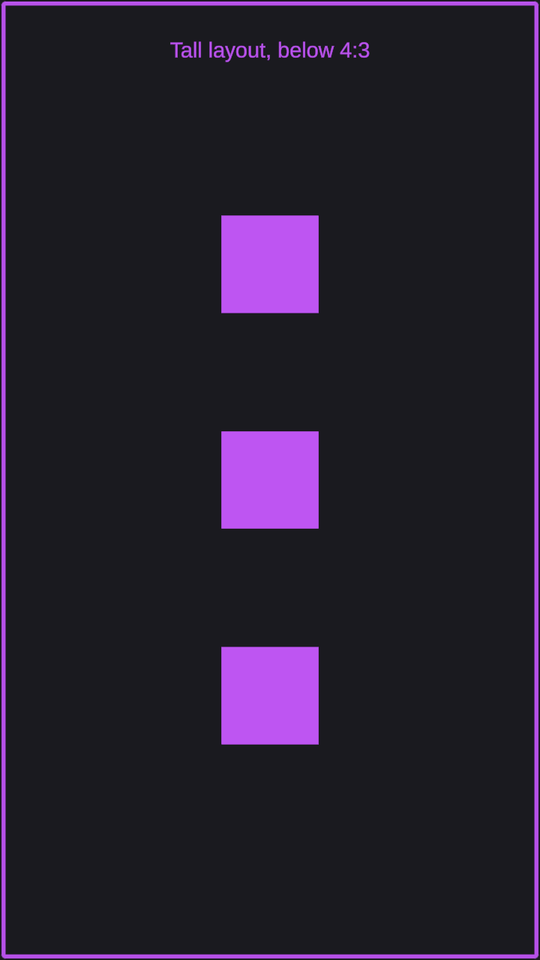

Smart UI Aspect Switch component
Switches between layouts by the aspect ratio of the screen area of a UI Scaler. Use it when one layout cannot serve every screen shape, for example a wide layout with side panels for desktop and ultrawide screens, a standard layout for tablets and a tall layout for phones in portrait.
Add the component to a UI Scaler, or to any object under one, and add an aspect variant for each layout.

| Field | Description |
|---|---|
| Name | First field of the variant row. Name of the variant, reported as the active variant name in code. |
| Aspect ratio | The two numbers next to the name. Smallest aspect ratio of the screen area this variant is used for, as width : height, for example 16 : 9. The value in brackets is the same ratio as a single number. |
| Layout | Object that is activated while this variant is active and deactivated otherwise. Optional. |
| Activated Event | Event invoked when this variant becomes active. Shown when the variant is expanded. |
| Deactivated Event | Event invoked when this variant stops being active. Shown when the variant is expanded. |
| Active Variant Changed Event | Below the variants. Invoked with the name of the new active variant whenever the active variant changes. It can call a method that takes a text directly, for example Animator.SetTrigger with a trigger per variant name, or the text of a label. |
How the variant is chosen
The aspect ratio of the UI Scaler's screen area is width divided by height. The screen area is the safe area when the UI Scaler uses it, so a notch or a home indicator counts. The variant with the largest Aspect Ratio that is not wider than the screen area becomes active. When the screen area is thinner than every variant, the thinnest variant is used.
Example with three variants, Tall 9 : 16, Standard 4 : 3 and Wide 16 : 9:
| Screen area | Active variant |
|---|---|
| 21 : 9 (2.33) | Wide |
| 16 : 9 (1.78) | Wide |
| 16 : 10 (1.60) | Standard |
| 1 : 1 (1.00) | Tall |
| 9 : 19.5 (0.46) | Tall, the thinnest variant |
Keep the variants ordered from the thinnest to the widest. The inspector offers a "Sort Aspect Variants" button when they are not, and warns when two variants share the same ratio.
The same UI Scaler with these three variants on a 16:9, a 4:3 and a 9:16 screen:



Inspector
- The inspector shows the aspect ratio of the screen area and the active variant.
- Layouts are switched and the variant events invoked in Play Mode and in the "Preview" scaling mode of the Smart UI Scaler editor window. In the other scaling modes the layouts are left as they are, so each one can be edited.
- The inspector warns when no UI Scaler is found on the object or its parents, when a layout is the object itself or one of its parents, and when two variants use the same layout.
Editing each layout in its own shape
In the "Fitted Reference Resolution" and "Reference Resolution" scaling modes, the inspector has an "Edit Layout" button for each variant. It shows the layout of the variant, hides the others, and sizes the UI Scaler exactly as it is sized in Play Mode on a screen with the aspect ratio of the variant, letterboxed in the Game view. A tall layout is then edited in a tall area, with the same Expand Progress, Content Scale and Alignment as on a device. The "Reference Resolution" button returns the UI Scaler to its reference resolution.
Showing a layout can be undone, and the shape of the UI Scaler is only an editor preview: it is never saved and is cleared when the Aspect Switch is disabled, in "Preview" and in Play Mode.
Tip
Save the scene with all layouts inactive. A layout that is saved active runs Awake(), OnEnable(), Start() and one Update() of its scripts before the Aspect Switch deactivates it on a screen where another variant is used. With all layouts saved inactive, the Aspect Switch only activates the layout that is used, so only its scripts run. "Edit Layout" activates the layout it shows, so deactivate that layout again before saving. See Lifecycle and update order.
Reacting from code
Read the active variant with ActiveVariant, ActiveVariantName or ActiveVariantIndex, and get notified when it changes. The listener receives the new variant, and PreviousVariant tells which one was active before, so a transition can depend on its direction, for example from wide to tall:
using SmartUIScaler;
using UnityEngine;
public class MenuLayoutListener : MonoBehaviour
{
[SerializeField]
private SmartUIAspectSwitch _aspectSwitch;
private void OnEnable()
{
_aspectSwitch.AddActiveVariantChangedListener(OnActiveVariantChanged);
}
private void OnDisable()
{
_aspectSwitch.RemoveActiveVariantChangedListener(OnActiveVariantChanged);
}
private void OnActiveVariantChanged(UIScalerAspectVariant active)
{
Debug.Log($"Layout changed from {_aspectSwitch.PreviousVariant.Name ?? "none"} to {active.Name}");
}
}
The listener is invoked right away when the active variant is already known, so a listener added late does not miss the current state. When no variant was active before, PreviousVariant is empty: its Name is null. Pass false as the second argument to only hear about later changes. The variants are read-only from code: their name, aspect ratio and layout can be read with GetVariant, and their events are wired in the inspector. To react to one variant from code, check the name in the listener, for example if (active.Name == "Tall").
When the active variant changes, the order is: the layouts are switched, the deactivated event of the previous variant is invoked, then the activated event of the new one, then the Active Variant Changed event, then the listeners added from code. All of this happens before the Canvas layout is rebuilt in the same frame. The layouts are switched before the first frame is rendered. For what the scripts in a layout that was saved active receive in the first frame, see Lifecycle and update order.
Note
In the editor the active variant is also resolved in the scaling modes other than "Preview", so listeners added from code are invoked there too. Only the layouts and the variant events wait for Play Mode or "Preview".